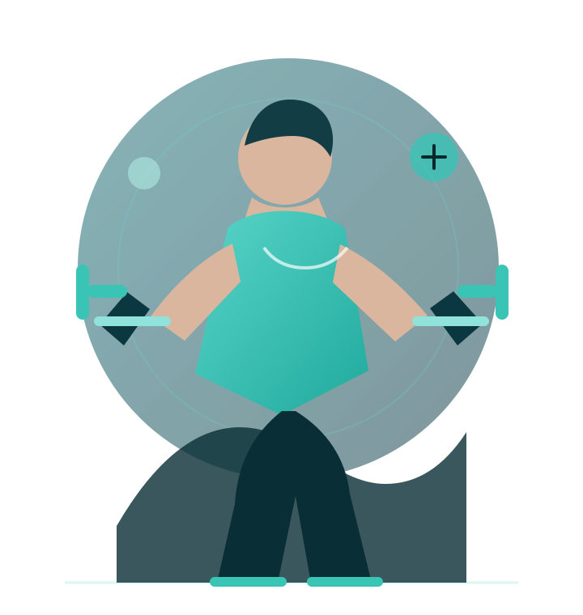
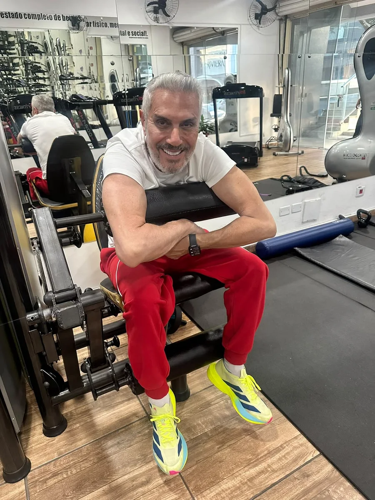
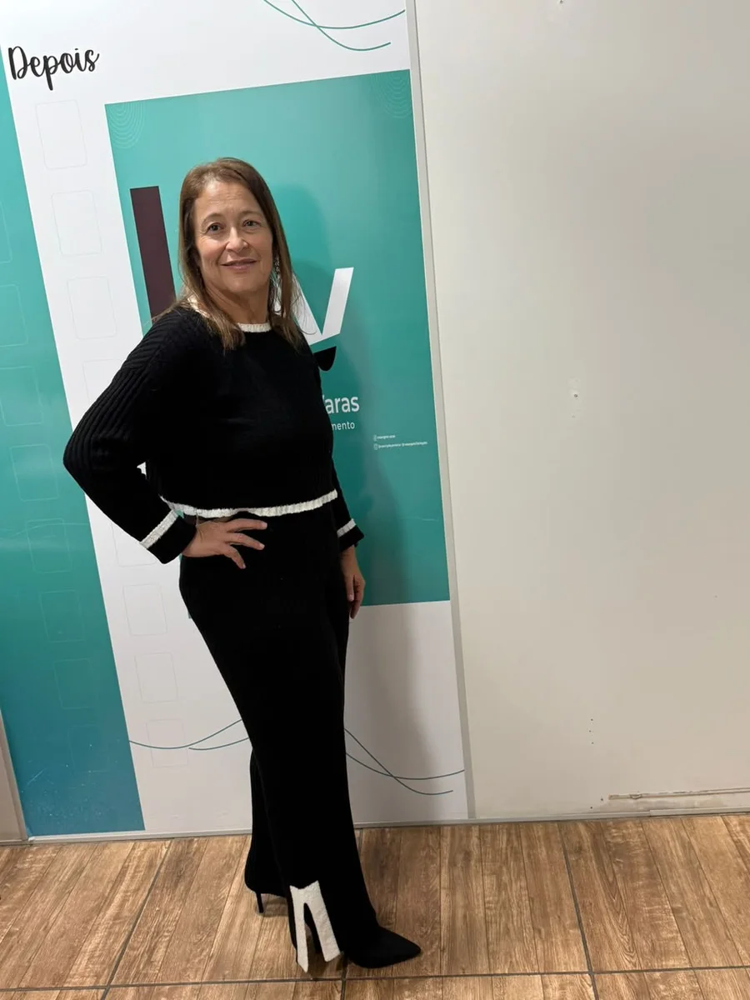

Avaliação
Ponto de partida individual
Programa individual de 45 dias • Atibaia
Emagreça com um plano que cabe na sua rotina
Avaliação, planejamento e acompanhamento para ajudar você a criar hábitos mais consistentes, sem depender de soluções extremas ou planos genéricos.
A conversa pelo WhatsApp não gera compromisso de contratação.
- Atendimento individual
- Acompanhamento por 45 dias
- Presencial em Atibaia

Dias de acompanhamento
Com ajustes ao longo do processo
Importante: resultados variam conforme organismo, condições de saúde, rotina e adesão. Não existe garantia de perda de peso específica.
Avaliação individual
O processo começa entendendo o seu momento.
Plano realista
Estratégia compatível com a rotina.
Acompanhamento
Ajustes durante os 45 dias.
Atibaia
Atendimento presencial com agendamento.
Um processo possível de manter
Você não precisa de mais uma tentativa impossível
Quando o plano ignora sua rotina, qualquer resultado fica difícil de sustentar. A proposta é organizar o processo de forma progressiva e individual.
Planos genéricos
Estratégias prontas costumam desconsiderar horários, limitações e histórico pessoal.
Falta de constância
Sem acompanhamento, é mais fácil perder a direção quando a semana não sai como planejado.
Rotina corrida
O programa busca encaixar o cuidado no dia a dia real, não em uma rotina perfeita que não existe.
Como funciona
Um caminho claro do primeiro contato à reavaliação
Cada etapa tem uma função prática para tornar o acompanhamento mais organizado e compreensível.
-
01
Avaliação inicial
Conversa sobre objetivo, rotina, histórico e condições atuais para entender o ponto de partida.
-
02
Planejamento individual
Construção de uma estratégia compatível com disponibilidade, limitações e objetivo.
-
03
Aplicação acompanhada
Execução do planejamento durante os 45 dias, com acompanhamento e ajustes necessários.
-
04
Reavaliação
Análise da evolução e orientação sobre os próximos passos após o ciclo.
Programa de 45 dias
Um acompanhamento pensado para sair do improviso
As etapas são conectadas para que você entenda o que está fazendo, por que está fazendo e quais ajustes precisam acontecer.
Avaliação e estratégia individual
O planejamento parte da sua realidade, em vez de aplicar uma fórmula igual para todas as pessoas.
Ajustes progressivos
O plano pode ser revisto conforme a resposta e as dificuldades encontradas durante o processo.
Visão de evolução
Acompanhamento para observar mudanças, corrigir o caminho e manter o foco no objetivo definido.
Rotina possível
Uma abordagem que considera tempo disponível e limitações, sem depender de uma agenda perfeita.
Orientação próxima
Espaço para esclarecer dúvidas e entender melhor o processo ao longo dos 45 dias.
Evoluções reais
Resultados que mostram a força de um processo acompanhado
Estes casos são exemplos individuais enviados pela equipe. Eles mostram possibilidades, não uma promessa de que todas as pessoas terão a mesma evolução.

10 kg resultado informadoCaso real
10 kg eliminados
Uma evolução construída dentro da realidade e do processo desta pessoa, com acompanhamento e constância.

55 kg resultado informadoCaso real
55 kg eliminados
Um resultado individual expressivo, que não deve ser usado como prazo, meta ou garantia para outras pessoas.
Resultados individuais variam.
Organismo, condições de saúde, rotina, tempo de acompanhamento e adesão influenciam a evolução. A avaliação é indispensável.
Para quem é
O programa pode fazer sentido para você que busca...
- Emagrecer com orientação individual.
- Criar uma estratégia compatível com a rotina.
- Melhorar a consistência sem medidas extremas.
- Entender melhor o próprio processo.
- Participar ativamente das etapas e orientações.
Antes de começar
Cada caso precisa ser avaliado individualmente. Pessoas com condições de saúde específicas podem precisar de liberação ou acompanhamento de outros profissionais.
Conteúdo explicativo
Saúde e condicionamento vão além do número da balança
Assista ao vídeo explicativo enviado pela equipe. Ele reforça a importância de olhar para o corpo de forma mais ampla e responsável.
- Informação profissional e educativa.
- Sem reprodução automática ou rastreamento externo.
- O conteúdo não substitui avaliação individual.
O navegador não conseguiu iniciar o player. Abrir o vídeo diretamente
Vídeo vertical • 1 min 36 s
45
dias de acompanhamento estruturado
Quem conduz o processo
Rosangela Varas
Um acompanhamento próximo, organizado e construído a partir da rotina real de cada pessoa.
A proposta do programa é substituir soluções genéricas por um processo com avaliação, planejamento e acompanhamento durante um ciclo definido.
Antes de qualquer início, o objetivo é entender se o formato é adequado para o seu momento e explicar com clareza como as etapas funcionam.
- Atendimento individualizado
- Programa presencial em Atibaia
- Planejamento adaptado à rotina
Dúvidas frequentes
Informação clara antes de decidir
Estas respostas explicam o funcionamento geral. Os detalhes do seu caso são tratados na avaliação inicial.
Fazer outra pergunta pelo WhatsAppO processo é dividido em avaliação inicial, planejamento individual, aplicação acompanhada e reavaliação ao final do ciclo.
Sim. O atendimento informado é presencial em Atibaia, mediante agendamento pelo WhatsApp.
Não é necessário já ter uma rotina perfeita. A avaliação serve justamente para entender seu ponto de partida e verificar a abordagem adequada.
Não. A proposta é considerar objetivo, rotina, histórico e limitações antes de organizar o planejamento.
Não. Resultados variam de pessoa para pessoa. A avaliação inicial é necessária para definir objetivos responsáveis e compatíveis com cada caso.
A equipe recebe suas informações, esclarece dúvidas e orienta sobre disponibilidade e próximos passos para a avaliação.
Primeiro passo
Conte seu objetivo e receba as orientações iniciais
Preencha os campos para montar uma mensagem organizada. Nenhum dado é enviado para este site: ao continuar, o WhatsApp será aberto com o texto pronto para você revisar.
Sem cadastro, senha ou armazenamento de dados no site.
Atendimento presencial
RV Fisiologia em Atibaia
Entre em contato para verificar disponibilidade e combinar a avaliação inicial.
Endereço
Alameda Prof. Lucas Nogueira Garcez, 1195
Vila Thais — Atibaia/SP
Vila Thais — Atibaia/SP
WhatsApp
(11) 99123-4513
Instagram
@rvfisiologia
Atibaia — SP
O mapa externo só será carregado após sua autorização.
Comece pela conversa
Dê o primeiro passo com uma avaliação individual
Explique seu objetivo e descubra como o Programa de 45 Dias pode ser adaptado à sua rotina.